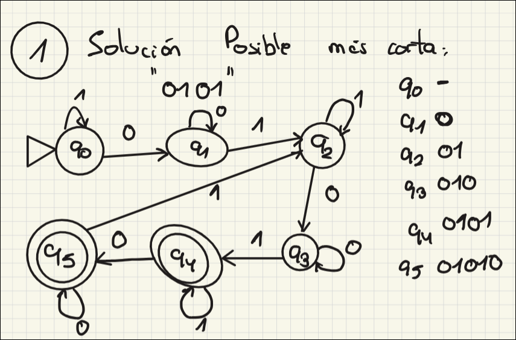
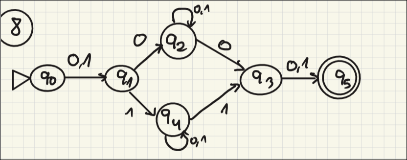
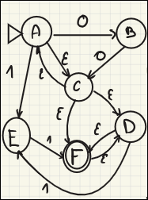
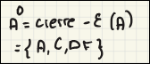
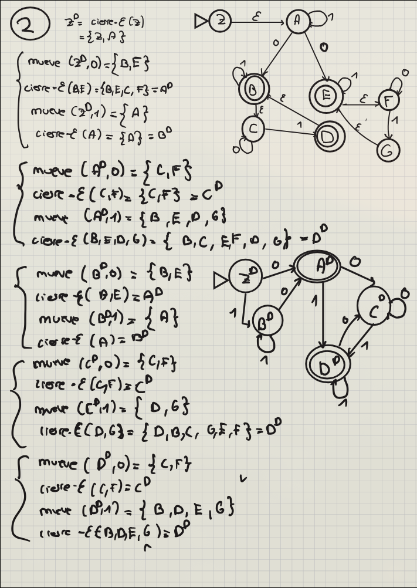
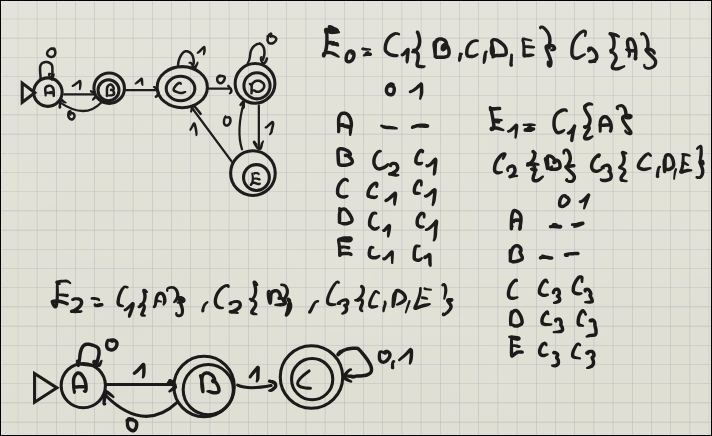

TALF · curso 3
2. Autómatas finitos · TALF
2.1 Autómata Finito Determinista (AFD)
Concepto Clave: "Una máquina sin dudas".
Un AFD es el modelo más estricto. Imagínalo como un tablero de juego donde, dado una casilla (estado) y una carta (símbolo), solo tienes una única jugada legal.
Características para identificar un AFD:
- Determinismo: Para cada estado y cada símbolo del alfabeto, existe exactamente una flecha de salida. Ni cero, ni dos. Una.
- Sin magia: No existen movimientos "gratuitos" (no hay transiciones
).
Definición Formal (La "5-tupla"): En ejercicios teóricos, siempre debes definir estas 5 partes:
: Catálogo de todos los estados (los círculos). : Alfabeto (las letras o números admitidos, ej: ). : El mapa de carreteras. Es una función . (Entra un estado y un símbolo, sale un estado). : Donde empieza todo (flecha sin origen). : Donde ganamos (doble círculo).

Función de Transición Extendida (
1. Diferencia Conceptual
(Transición simple): Procesa un solo símbolo a la vez. Es el "paso a paso" del autómata. (Transición extendida): Procesa una cadena completa ( ) desde el estado actual hasta el final. Calcula la "ruta entera".
-
Definición Formal (Recursiva): Para procesar una cadena, la máquina descompone el problema por inducción:
- Caso Base (Cadena vacía): Si no leo nada, me quedo en el mismo estado.
- Paso Inductivo (Cadena
):
Significado: Primero calculo dónde acabo con el prefijo
(usando ) y, desde ese estado intermedio, doy el último paso con el símbolo final (usando ). - Caso Base (Cadena vacía): Si no leo nada, me quedo en el mismo estado.
-
Definición de Lenguaje Aceptado: Una cadena
pertenece al lenguaje del autómata si, al procesarla entera desde el inicio, acabamos en un estado final:
2.2 Autómata Finito No Determinista (AFN)
Concepto Clave: "Procesamiento en paralelo" o "Multiverso".
El AFN es una máquina teórica más flexible. A diferencia del AFD, aquí la máquina puede "adivinar" el camino correcto.
Diferencias prácticas para ejercicios
- Ambigüedad: Desde un estado con un símbolo (ej: 'a'), pueden salir múltiples flechas o ninguna.
- Multiverso: Si hay dos flechas con 'a', el autómata se clona y sigue ambos caminos a la vez.
- Aceptación: Si al menos una de las copias del autómata llega a un estado final al terminar la cadena, la cadena se acepta. Si todas mueren o acaban en no-finales, se rechaza.
Definición Formal
La única diferencia real con el AFD está en la función de transición
- Traducción: La función devuelve un conjunto de estados (potencia de
), no un estado único. Puede devolver un conjunto vacío (callejón sin salida).

En el AFN, puedes estar en varios estados a la vez y elegir entre múltiples caminos.
Función de Transición Extendida en AFN (
-
Concepto clave: A diferencia del determinista (que devuelve un estado), en un AFN la función devuelve un conjunto de estados
, representando todos los caminos posibles simultáneos. -
Definición Recursiva:
- Base (
): Si no hay entrada, el conjunto es solo el estado actual: . - Inducción (
): Para procesar una cadena, primero calculas los estados a los que llegas con el prefijo , aplicas la transición de la última letra a cada uno de ellos, y unes los resultados.
- Base (
-
Condición de Aceptación: Una cadena se acepta si, al terminar de leerla, el conjunto de estados posibles contiene al menos un estado final.
2.3 Transiciones Clausura-ε
Una transición
Para resolver ejercicios de conversión, necesitas dominar la Clausura-ε.
- Pregunta: "¿A dónde puedo llegar desde aquí sin gastar ni una moneda (símbolo)?"
- Regla: La
clausura-ε(q)siempre incluye al propio estadomás cualquier estado alcanzable solo con flechas .

La clausura de la imagen anterior sería:

Algoritmo para sacar la clausura:
- Sitúate en un estado (ej:
). - Mete
en tu saco (siempre llegas a ti mismo). - Mira si salen flechas con
. Si sí, sigue esas flechas a los nuevos estados. - Desde esos nuevos estados, ¿salen más
? Síguelas también. - Repite hasta que no puedas avanzar más sin leer letras.
Ejemplo:
2.4 Equivalencia y Conversión: AFN → AFD
Los ordenadores reales no son "adivinos" (no son no-deterministas). Para programar un AFN, primero debemos convertirlo a AFD.
Como el AFN puede estar en varios sitios a la vez, cada estado del nuevo AFD será un grupo de estados del AFN original.
Para un ANF de
Algoritmo:
-
Inicio: Calcula la
del AFN. Este conjunto de estados es tu estado inicial del AFD. Llámalo "A". -
Iteración: Para el nuevo estado "A" y cada símbolo del alfabeto (ej: 0 y 1):
- Mira a dónde van los estados dentro de "A" con ese símbolo.
- A los destinos, aplícales
. - El resultado es un nuevo conjunto. ¿Ya existe? Úsalo. ¿No existe? Bautízalo como "B".
-
Iteración: Repite el paso 2 con "B", "C", etc., hasta que no aparezcan conjuntos nuevos.
-
Estados Finales: Cualquier estado del AFD (A, B, C...) que contenga al menos un estado final del AFN original, se convierte en estado final.
Fórmula mateḿatica (si la pide se la saca):
- Preguntas: "¿A dónde va
con la 'a'?" Digamos que va a . - Preguntas: "¿A dónde va
con la 'a'?" Digamos que va a . - Haces la Unión (
): El resultado es el nuevo estado .
Ejemplo práctico:

2.5 Minimización de AFD
Objetivo: Encontrar el autómata más pequeño posible que haga exactamente lo mismo. Elimina redundancia.
Algoritmo
- Partición Inicial (
): Divide los estados en solo dos grupos (clases):
- Finales (
): Todos los estados de aceptación. - No Finales (
): El resto. - Etiqueta cada grupo como
- Construcción de la Tabla de Transiciones: Para cada estado, anota a qué Grupo (
) viaja con cada símbolo (0, 1...), basándote en la partición anterior.
- Truco: No mires el estado destino, mira la clase del estado destino.
- Refinamiento (
): Analiza los grupos formados:
- Si dentro de un grupo (ej.
), todos los estados tienen el mismo patrón de clases destino, se quedan juntos. - Si un estado tiene un patrón diferente, se separa ("rompe" el grupo) y crea una nueva clase para la siguiente iteración.
-
Parada: Repite el proceso hasta que
sea idéntica a (ya no se rompen más grupos). -
Reconstrucción: Cada grupo final es un único estado en el autómata minimizado.

2.6 Equivalencia entre Estados
Dos estados
Imagínate que metemos el estado
- Si para cualquier cadena infinita de pruebas que se te ocurra, las dos cajas siempre coinciden (o ambas aceptan, o ambas rechazan), entonces los estados son equivalentes.
- Si encuentras una sola cadena donde una caja dice "Sí" y la otra "No", entonces son distinguibles (no equivalentes).
Definición Formal
Sea un autómata (o dos) sobre un alfabeto
Traducción:
Para toda palabra
Por lo que si nos dicen que si dos lenguajes regulares son equivalentes entre sí si los estados iniciales de sus correspondientes AFD son equivalentes
La equivalencia de estados es transitiva. Es decir, si para un AFD dos estados